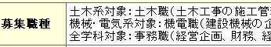
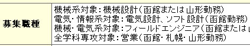

「勤務地」の入力方法
●「募集職種」の入力方法
募集している職種の記述は、下記の各場合に沿った記入としてください。
・1つの職種についてのみ募集している場合
そのまま、その職種について記入してください。
・2つ以上の職種について募集している場合
「各職種の対象学科・専攻」：「募集職種の概要」の順で列記してください。
（"："または"…"を使用） (例1)

また、各職種によって勤務予定地が異なる場合は、
「各職種の対象学科・専攻」：「募集職種の概要」（「勤務予定地」）
のように記述してください。
(例2)

●「勤務地」の入力方法
「勤務地」は、下記の地域区分で分けていますので、この区分にならって該当する地域をチェックしてください。
・道央…石狩、後志、空知、胆振、日高地方
・道北…宗谷、留萌、上川、網走地方
・道東…十勝、釧路、根室地方
・道南…渡島、桧山地方
・東北…青森、岩手、秋田、宮城、山形、福島
・東京近郊…東京、神奈川、千葉、埼玉
・関東…群馬、栃木、茨城
・中部…愛知、静岡、岐阜、三重、山梨、長野、新潟、富山、石川、福井
・近畿…大阪、京都、兵庫、滋賀、奈良、和歌山
・中国四国…岡山、広島、山口、鳥取、島根、香川、愛媛、徳島、高知
・九州沖縄…福岡、佐賀、長崎、大分、熊本、宮崎、鹿児島、沖縄
・海外…日本以外の勤務地